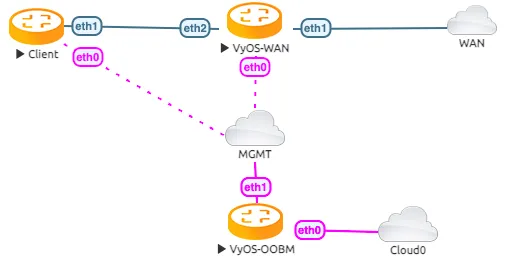

Tunnelbroker.net (IPv6)
This guide walks through the setup of https://www.tunnelbroker.net/ for an IPv6 Tunnel.
Prerequisites
A public, routable IPv4 address. This does not necessarily need to be static, but you will need to update the tunnel endpoint when/if your IP address changes, which can be done with a script and a scheduled task.
Account at https://www.tunnelbroker.net/
Requested a “Regular Tunnel”. You want to choose a location that is closest to your physical location for the best response time.
Topology
The example topology has 2 VyOS routers. One as the WAN router and one as a client, to test a single LAN setup

Configuration
First, we configure the vyos-wan interface to get a DHCP address.
set interfaces ethernet eth1 address dhcp
Now we are able to setup the tunnel interface.
set interfaces tunnel tun0 address '2001:470:6c:779::2/64' #Tunnelbroker Client IPv6 address
set interfaces tunnel tun0 description 'HE.NET IPv6 Tunnel'
set interfaces tunnel tun0 encapsulation 'sit'
set interfaces tunnel tun0 remote '216.66.86.114' #Tunnelbroker Server IPv4 address
set interfaces tunnel tun0 source-address '172.29.129.60' # Tunnelbroker Client IPv4 address. See note below
Note
The source-address is the Tunnelbroker client IPv4
address or if there is NAT the current WAN interface address.
If source-address is dynamic, the tunnel will cease working once
the address changes. To avoid having to manually update
source-address each time the dynamic IP changes, an address of
‘0.0.0.0’ can be specified.
Setup the IPv6 default route to the tunnel interface
set protocols static route6 ::/0 interface tun0
Now you should be able to ping a public IPv6 Address
vyos@vyos-wan:~$ ping 2001:470:20::2 count 4
PING 2001:470:20::2(2001:470:20::2) 56 data bytes
64 bytes from 2001:470:20::2: icmp_seq=1 ttl=64 time=33.8 ms
64 bytes from 2001:470:20::2: icmp_seq=2 ttl=64 time=43.9 ms
64 bytes from 2001:470:20::2: icmp_seq=3 ttl=64 time=43.4 ms
64 bytes from 2001:470:20::2: icmp_seq=4 ttl=64 time=42.5 ms
--- 2001:470:20::2 ping statistics ---
4 packets transmitted, 4 received, 0% packet loss, time 2999ms
rtt min/avg/max/mdev = 33.802/40.920/43.924/4.139 ms
Assuming the pings are successful, you need to add some DNS servers. Some options:
set system name-server 2001:470:20::2 #Tunnelbroker DNS Server
You should now be able to ping something by IPv6 DNS name:
vyos@vyos-wan:~$ ping tunnelbroker.net count 4
PING tunnelbroker.net(tunnelbroker.net (2001:470:0:63::2)) 56 data bytes
64 bytes from tunnelbroker.net (2001:470:0:63::2): icmp_seq=1 ttl=48 time=285 ms
64 bytes from tunnelbroker.net (2001:470:0:63::2): icmp_seq=2 ttl=48 time=186 ms
64 bytes from tunnelbroker.net (2001:470:0:63::2): icmp_seq=3 ttl=48 time=178 ms
64 bytes from tunnelbroker.net (2001:470:0:63::2): icmp_seq=4 ttl=48 time=177 ms
--- tunnelbroker.net ping statistics ---
4 packets transmitted, 4 received, 0% packet loss, time 3002ms
rtt min/avg/max/mdev = 176.707/206.638/285.128/45.457 ms
LAN Configuration
At this point, your VyOS install should have full IPv6, but now your LAN devices need access.
With Tunnelbroker.net, you have two options:
Routed /64. This is the default assignment. In IPv6-land, it’s good for a single “LAN”, and is somewhat equivalent to a /24.
Routed /48. This is something you can request by clicking the “Assign /48” link in the Tunnelbroker.net tunnel config. It allows you to have up to 65k
Unlike IPv4, IPv6 is really not designed to be broken up smaller than /64. So if you ever want to have multiple LANs, VLANs, DMZ, etc, you’ll want to ignore the assigned /64, and request the /48 and use that.
Single LAN Setup
Single LAN setup where eth2 is your LAN interface. Use the Tunnelbroker Routed /64 prefix:
set interface ethernet eth2 address '2001:470:6d:778::1/64' # Tunnelbroker Routed /64 prefix
set service router-advert interface eth2 name-server '2001:470:20::2'
set service router-advert interface eth2 prefix 2001:470:6d:778::/64 # Tunnelbroker Routed /64 prefix
Please note, ‘autonomous-flag’ and ‘on-link-flag’ are enabled by default, ‘valid-lifetime’ and ‘preferred-lifetime’ are set to default values of 30 days and 4 hours respectively.
And the client to receive an IPv6 address with stateless autoconfig.
set interfaces ethernet eth1 ipv6 address autoconf
This accomplishes a few things:
Sets your LAN interface’s IP address
Enables router advertisements. This is an IPv6 alternative for DHCP (though DHCPv6 can still be used). With RAs, Your devices will automatically find the information they need for routing and DNS.
Now the Client is able to ping a public IPv6 address
vyos@client:~$ ping 2001:470:20::2 count 4
PING 2001:470:20::2(2001:470:20::2) 56 data bytes
64 bytes from 2001:470:20::2: icmp_seq=1 ttl=63 time=32.1 ms
64 bytes from 2001:470:20::2: icmp_seq=2 ttl=63 time=41.8 ms
64 bytes from 2001:470:20::2: icmp_seq=3 ttl=63 time=41.7 ms
64 bytes from 2001:470:20::2: icmp_seq=4 ttl=63 time=47.1 ms
--- 2001:470:20::2 ping statistics ---
4 packets transmitted, 4 received, 0% packet loss, time 3005ms
rtt min/avg/max/mdev = 32.128/40.688/47.107/5.403 ms
Multiple LAN/DMZ Setup
That’s how you can expand the example above.
Use the Routed /48 information. This allows you to assign a
different /64 to every interface, LAN, or even device. Or you could break your
network into smaller chunks like /56 or /60.
The format of these addresses:
2001:470:xxxx::/48: The whole subnet. xxxx should come from Tunnelbroker.2001:470:xxxx:1::/64: A subnet suitable for a LAN2001:470:xxxx:2::/64: Another subnet2001:470:xxxx:ffff::/64: The last usable /64 subnet.
In the above examples, 1,2,ffff are all chosen by you. You can use 1-ffff (1-65535).
So, when your LAN is eth1, your DMZ is eth2, your cameras are on eth3, etc:
set interfaces ethernet eth1 address '2001:470:xxxx:1::1/64'
set service router-advert interface eth1 name-server '2001:470:20::2'
set service router-advert interface eth1 prefix 2001:470:xxxx:1::/64
set interfaces ethernet eth2 address '2001:470:xxxx:2::1/64'
set service router-advert interface eth2 name-server '2001:470:20::2'
set service router-advert interface eth2 prefix 2001:470:xxxx:2::/64
set interfaces ethernet eth3 address '2001:470:xxxx:3::1/64'
set service router-advert interface eth3 name-server '2001:470:20::2'
set service router-advert interface eth3 prefix 2001:470:xxxx:3::/64
Please note, ‘autonomous-flag’ and ‘on-link-flag’ are enabled by default, ‘valid-lifetime’ and ‘preferred-lifetime’ are set to default values of 30 days and 4 hours respectively.
Firewall
Finally, don’t forget the
Firewall. The usage is
identical, except instead of set firewall ipv4 name NAME, you would
use set firewall ipv6 name NAME.
Similarly, to attach the firewall, you would use
set firewall ipv6 name NAME rule N inbound-interface name eth0 or
set firewall zone LOCAL from WAN firewall ipv6-name.